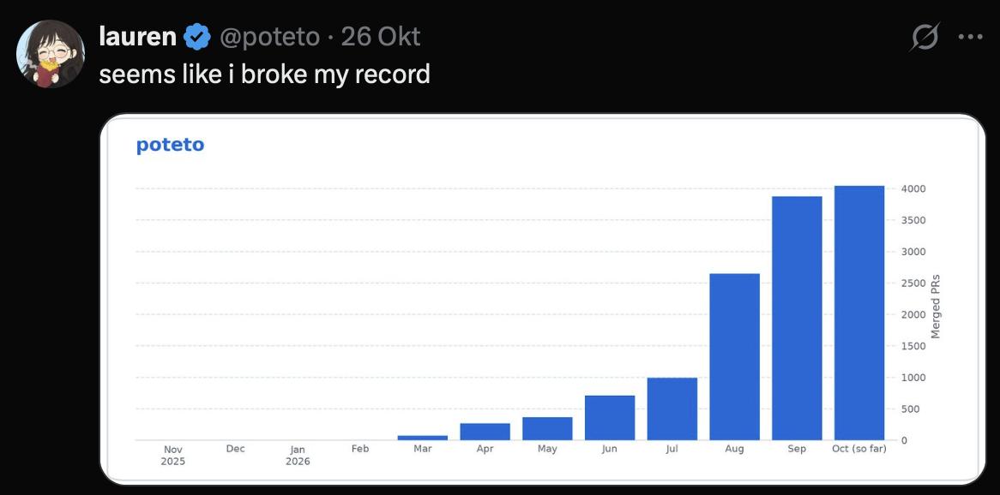
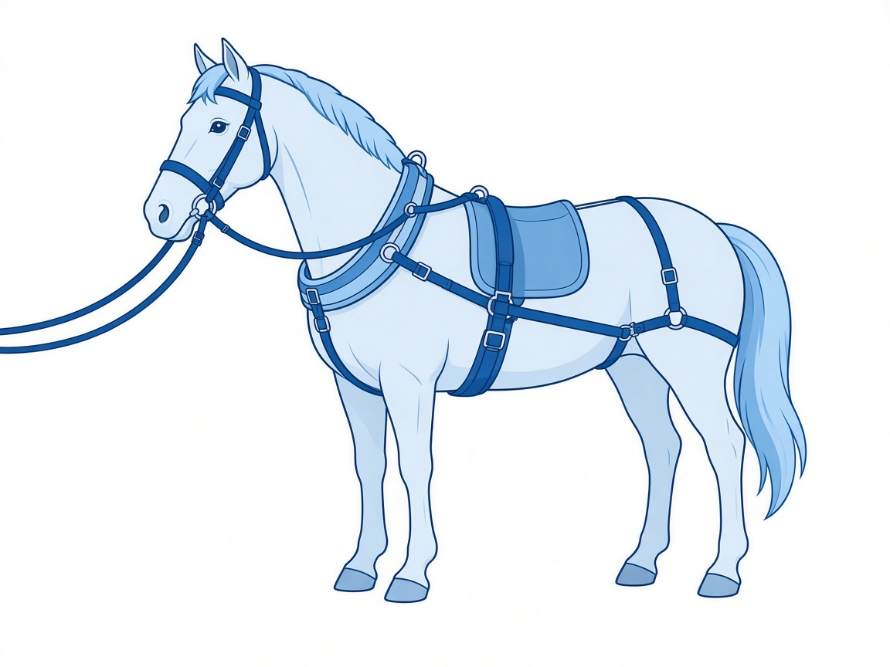
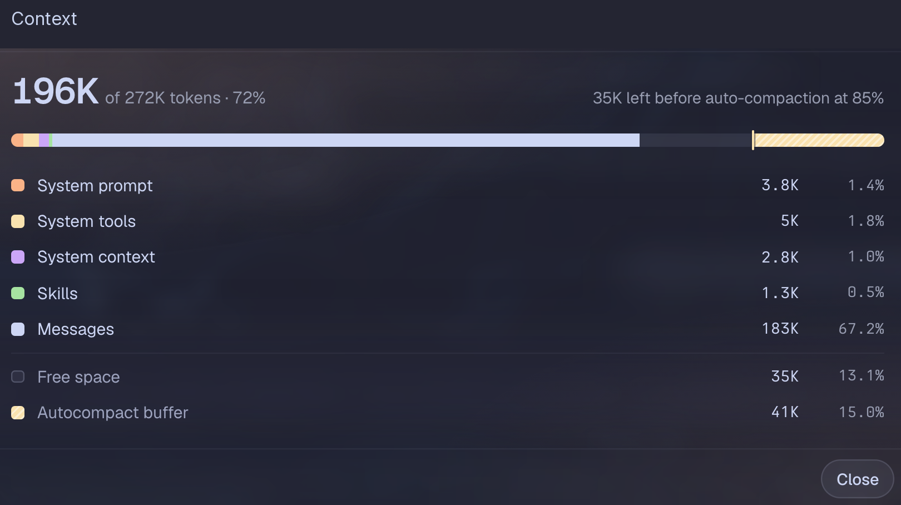

Build Reliable Agents
Agentic Engineering
in the Era of Agentic Engineering
Adhitya Febhiakbar
1
Nulis kode bukan lagi bottleneck.
Sekarang: gimana kita tahu hasilnya benar?

Sumber: @poteto di X, 26 Okt 2026
2
Layers of AI engineering
Fokusnya nambah, layer lama tetap dipakai.
Loop engineering
siklus kerja
Harness engineering
sistem kerja
Context engineering
informasi
Prompt
engineering
instruksi
diadaptasi dari Nick Babich
3
Prompt engineering
Prompt: input yang kita kasih buat mengarahkan AI.
> Act as a senior Go engineer. Improve this function so its response time drops below 200ms without changing its output.
Contoh prompt, bukan kutipan verbatim.
4
Context engineering
Context: informasi yang membantu AI memahami tugasnya.
OpenCode + Superpowers
Template prompt:
KONTEKS TETAP
Gunakan sebagai source of truth:
- docs/ARCHITECTURE.md
- docs/AI_RULES.md
- docs/DEVELOPMENT_WORKFLOW.md
- docs/FEATURE_TEMPLATE.md
Bagian ini yang berubah
Requirement:
[Berubah sesuai fitur]
KELUARAN PLAN
Jangan coding dulu. Tunjukkan:
1. Command yang harus dijalankan
2. File yang akan digenerate otomatis
3. File yang perlu saya implementasikan
4. Mock yang perlu digenerate
5. Unit test scenario
6. Implementation plan
Gunakan pattern feature existing yang paling mirip.
Jangan membuat architecture baru.
subagent-driven-development
Konteks proyek masuk ke workflow
brainstorming
writing-plans
Ambil task dari plan
Implementer
Coding · Test · Self-review
Reviewer
spec + kualitas kode
Lolos
review?
Masih ada
task?
Perbaiki
Final review
finishing-a-development-branch
Ya
Tidak
Ya
Tidak
5
Harness engineering
Harness: sistem di sekitar model yang bikin agent bisa kerja, sekaligus ngatur cara kerjanya.

ARCHITECTURE.md
AI_RULES.md
DEVELOPMENT_WORKFLOW.md
FEATURE_TEMPLATE.md
go-workflow
go-development
go-unit-test
go-verification
+5 skill lainnya
Gunakan sebagai source of truth:
- docs/ARCHITECTURE.md
- docs/AI_RULES.md
- docs/DEVELOPMENT_WORKFLOW.md
- docs/FEATURE_TEMPLATE.md
Requirement:
[Berubah sesuai fitur]
Jangan coding dulu. Tunjukkan:
1. Command yang harus dijalankan
2. File yang akan digenerate otomatis
3. File yang perlu saya implementasikan
4. Mock yang perlu digenerate
5. Unit test scenario
6. Implementation plan
Gunakan pattern feature existing yang paling mirip.
Jangan membuat architecture baru.
start implementation and call agents
6
Loop engineering
Loop: siklus kerja yang jalan berulang-ulang.
Ralph Wiggum loop
Cuplikan historis dari Geoffrey Huntley: ilustrasi loop tanpa batas, bukan rekomendasi script siap pakai. claude-code mengikuti ejaan sumber historis, bukan klaim command CLI saat ini.
while :; do
cat PROMPT.md | claude-code
done
Contoh otomasi kerja malam — cerita pihak lain; mekanisme loop internal tidak dirinci
Manusia menyiapkan. Agent mengerjakan. Manusia memeriksa.
SIANG
Manusia · 9–5
MALAM
Otomatis · AI agent
PAGI
Manusia
Siapkan dokumen dan tiket
Kebutuhan pekerjaan menjadi konteks AI
Cronjob memulai proses malam
Baca file instruksi
Periksa tiket berstatus ready to dev
Baca dokumen terkait tiap tiket
Buat plan · Implementasi · Commit
Hasil kerja untuk diperiksa
Code review dan testing
Manusia memeriksa hasil pekerjaan malam
7
Agents workflow
01
Agents
Plan + review/refine
Human review
02
Agents
PRD + feature map
03
Agents
Implementasi
04
Agents
Verification DONE
05
Human
Buat PR + minta review squad lead
Agents
Human
8
Planning
Intent
Put extra effort here.
1
Selaraskan pemahaman: tujuan, batasan, dan asumsi.
2
Minta AI menanyakan yang ambigu sebelum lanjut.
3
Gunakan model dengan intelligence terbaik yang kalian punya.
4
Review/refine plan, lalu simpan keputusan final.
9
Context window
Kapasitas konteks yang bisa dipakai model buat satu kali menghasilkan respons, diukur dalam token.

• Obrolan nyambung karena konteks sebelumnya ikut dikirim.
• Kapasitasnya terbatas, jadi simpan keputusan penting biar bisa dimuat lagi.
Strategi kelanjutan
Sliding window
Compaction
Handoff
1
1
Messages 183K (67%): yang memenuhi konteks adalah percakapan, bukan setup.
2
2
Garis auto-compaction 85%: sisa 35K sebelum riwayat diringkas otomatis; alasan keputusan penting disimpan di dokumen.
3
3
Skills 1.3K (0.5%): bukti untuk slide 12 (kapan skill dimuat). Di awal yang dimuat cuma katalog name + description, bukan isi skill.
10
Role · Agent · Skill
backend-engineer.md
---
name: backend-engineer
description: "Implements Go production code
and nested goconvey unit tests."
tools: [read, edit, bash] # Sebagian tools
model: ["@builder"]
---
You ship Go code and unit tests. You do not promote.
## Job
Before the first production edit, read
skill://go-development and follow it.
Cuplikan konfigurasi untuk presentasi, bukan file lengkap siap pakai.
Agent
= file itu sendiri: tanggung jawab, tools, dan instruksi.
Role
= model: ["@builder"], alias konfigurasi model, bukan persona.
Skill
= rujukan skill://go-development di body, prosedur yang dibaca saat diperlukan.
11
Kapan dan kenapa skill
Kapan skill dipakai
1
Di awal sesi, agent cuma muat katalog: name + description tiap skill.
2
Kalau tugasnya cocok dengan deskripsi, atau instruksi agent mewajibkan, agent baru baca isi SKILL.md.
3
Resource tambahan (scripts/, references/, assets/) baru diambil kalau dibutuhkan.
Kenapa skill bikin gw lebih percaya:
Prosedurnya tertulis dan sama tiap kali, nggak tergantung prompt hari itu.
Aturan dan kriteria selesainya eksplisit, jadi hasilnya bisa dicek.
Kalau agent salah, yang diperbaiki skill-nya, jadi salah yang sama nggak keulang.
Prosedurnya tertulis dan sama tiap kali, nggak tergantung prompt hari itu.
Potongan go-unit-test/SKILL.md v1.7
---
name: go-unit-test
description: Use this skill whenever
implementing, enhancing, fixing, refactoring,
or restructuring Go unit tests …
metadata:
version: "1.7"
---
## Hard status rule
Every unit-test run ends with exactly one status:
DONE, PARTIAL, or BLOCKED.
- Never claim DONE without ≥80% measured coverage
on scoped production functions/statements.
- Never weaken tests, skip cases, exclude code,
or narrow scope just to hit ≥80%.
Aturan dan kriteria selesainya eksplisit, jadi hasilnya bisa dicek.
Hasil coverage dari run unit-test service A, 21 Okt 2026
V5 verify_ok — production <fungsi produksi> 100.0%,
above 80% gate.
coverage scope: production <fungsi produksi> statements
measured: 100.0%
Kalau agent salah, yang diperbaiki skill-nya, jadi salah yang sama nggak keulang.
Chat dengan agent khusus refining skill
Gw
Di verification selalu ada Monitor yang direport testnya, padahal itu bukan endpoint. Tolong fix skill-nya.
Agent khusus refining skill
Penyebabnya, agent nyalin Monitor dari README ke feature map, terus ikut ngetes.
go-verification udah dipatch: Monitor bukan endpoint produk, jadi nggak dites dan nggak dilaporin. Template-nya ikut dibenerin, skill lama di-backup dulu.
12
Anatomi skill
skill-name/
├── SKILL.md # Wajib: metadata + instruksi
├── scripts/ # Opsional: kode yang dijalankan
├── references/ # Opsional: dokumentasi pendukung
└── assets/ # Opsional: template dan sumber daya statis
SKILL.md: frontmatter
• name: identitas skill.
• description: kemampuan dan kapan digunakan.
• Model lihat katalog dulu sebelum milih instruksi yang dibaca.
SKILL.md: body
• Tujuan: scope, input, dan prasyarat.
• Cara kerja: workflow, rules do & don't, constraints, contoh kode, dan penanganan kegagalan.
• Bukti selesai: verifikasi, output, dan handoff.
Pilih isi yang relevan; heading nggak harus seragam.
scripts/
• Otomasi yang dijalankan lewat tools agent.
• Tulis kapan dijalankan, plus input/output-nya.
• Contoh: login.sh untuk login ke cluster.
references/
• Panduan yang dibaca kalau relevan.
• Contoh: convention proyek, API, dan edge case.
assets/
• Template dan bahan statis yang dipakai saat kerja.
• Contoh: report-template.html untuk offline dry-run.
Pekerjaan berulang, workflow jelas? Coba jadikan skill.
• Daripada nulis prompt yang mirip berkali-kali, simpan prosedurnya sebagai skill reusable.
• Pas dipakai, kasih input dan kebutuhan khusus tugasnya aja. Prosedurnya nggak perlu ditulis ulang.
Extract from a hands-on task
“Complete a real task in conversation with an agent, providing context, corrections, and preferences along the way. Then extract the reusable pattern into a skill.”
— Agent Skills, “Best practices for skill creators”
Tips
13
Kasus nyata: unit test hijau, runtime panic
1
100% hijau
Development dan unit test sudah DONE. Coverage pada scope yang berubah 100%.
Di atas kertas semuanya hijau.
2
panic
Verifier menyalakan service dan memanggil RPC publik secara nyata.
Internal: runtime error: invalid memory address or nil pointer dereference
Unit test tidak menangkapnya.
3
BLOCKED
Verifier tidak menyebut DONE.
Status: BLOCKED, dengan lokasi baris, request, dan response asli sebagai bukti.
4
proven
Setelah diperbaiki di service A, verifier jalan ulang dan mencatat bug_fix: proven: koneksi kosong sekarang mengembalikan error biasa, bukan panic.
Karena masih ada masalah lain yang terpisah, status tetap BLOCKED, tidak dibulatkan jadi sukses.
14
Verification skill
go-verification
Gimana tahu pekerjaan udah selesai?
Service berjalan: aplikasi berhasil start dan siap terima request.
Endpoint diuji: request nyata ke endpoint yang kena dampak, request dan response disimpan.
Test dan coverage: unit test lulus, bukti coverage ≥80% di kode produksi dalam scope perubahan dicek.
Kebersihan kode: kode debug sementara, import nggak perlu, dan dead code dicek lalu dibersihin.
Versi dan dependency: versi sesuai perubahan, status local replace dicatat.
Bukti selesai: hasil pemeriksaan, gap yang tersisa, dan status DONE / PARTIAL / BLOCKED beserta buktinya.
Potongan STATUS.md dari run reverification nyata, 21 Okt 2026 (disamarkan).
# Reverification — service B
status: BLOCKED
Development DONE, unit-test DONE (changed scope 100%).
Actual response: Internal with runtime error:
invalid memory address or nil pointer dereference.
GetConnection() result used without checking err or conns.
No code/config/test changes made: user asked reverify
and report failures.
V1 verify_ok production and unit DONE
V2 verify_ok config present
V3 verify_ok readiness
V4 verify_ok listener process
V5 verify_fail actual RPC returns recovered panic
V6 verify_ok actual public map
V7 verify_ok paired artifacts
V8 verify_fail Phase B gated by failing Phase A
V9 verify_ok BLOCKED, no success claim
Remaining: fix unchecked GetConnection result,
then re-drive.
V5 verify_fail actual RPC returns recovered panic
V8 verify_fail Phase B gated by failing Phase A
Agent nulis sendiri kenapa belum selesai dan apa yang harus dibenerin.
15
Trust dibangun dari:
1
Instruksi yang eksplisit.
2
Konteks yang tepat.
3
Bukti bahwa pekerjaan beneran jalan.
16
Q&A
Masih ada yang bikin penasaran? Tanya aja.
17
Referensi
Harness & loop
Mitchell Hashimoto, “My AI Adoption Journey” (2026)
mitchellh.com/writing/my-ai-adoption-journey
Vivek Trivedy, “The Anatomy of an Agent Harness”, LangChain (2026)
langchain.com/blog/the-anatomy-of-an-agent-harness
Birgitta Böckeler, “Harness engineering for coding agent users” (2026)
martinfowler.com/articles/harness-engineering.html
Geoffrey Huntley, “Ralph”
Context
Jesse Vincent, Superpowers
Anthropic, Context windows
platform.claude.com/docs/en/build-with-claude/context-windows
Claude Code, Context window
code.claude.com/docs/en/context-window
Model Context Protocol, Architecture
Skills
Agent Skills
18